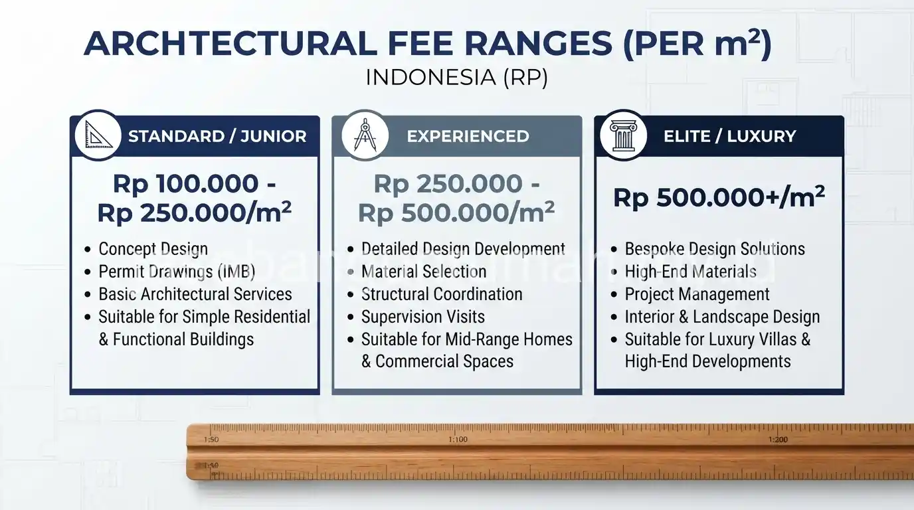

Daftar Isi
Sistem persentase RAB menghitung tarif arsitek berdasarkan persentase tertentu dari total biaya konstruksi, sedangkan sistem tarif per meter persegi menghitung biaya berdasarkan luas bangunan dikalikan tarif tetap per meter persegi.
Apa Itu Sistem Persentase RAB pada Tarif Jasa Arsitek?
Sistem persentase RAB menetapkan biaya jasa arsitek berdasarkan persentase tertentu dari total Rencana Anggaran Biaya konstruksi, sehingga semakin besar total biaya konstruksi, semakin besar pula biaya jasa arsitek yang dikenakan.
Sistem ini umumnya digunakan pada proyek dengan skala menengah hingga besar, karena persentase yang diterapkan biasanya konsisten meski nilai proyek berubah selama proses perencanaan.
Kelebihan sistem ini adalah biaya jasa arsitek proporsional dengan kompleksitas dan nilai proyek, namun klien perlu memastikan dasar perhitungan RAB yang digunakan sudah disepakati bersama agar tidak terjadi perbedaan interpretasi mengenai total biaya konstruksi.
Apa Itu Sistem Tarif per Meter Persegi pada Jasa Arsitek?
Sistem tarif per meter persegi menetapkan biaya jasa arsitek dengan mengalikan luas bangunan yang akan didesain dengan tarif tetap per meter persegi yang telah ditentukan sejak awal oleh arsitek atau biro desain.
Sistem ini lebih sering digunakan pada proyek rumah tinggal skala kecil hingga menengah karena perhitungannya lebih sederhana dan mudah diprediksi oleh klien sejak awal tanpa perlu menunggu penyusunan RAB konstruksi terlebih dahulu.
Tarif per meter persegi biasanya bervariasi tergantung tingkat kompleksitas desain, di mana desain dengan banyak detail khusus umumnya dikenakan tarif lebih tinggi dibandingkan desain standar.

Sistem Mana yang Lebih Menguntungkan Tergantung Skala Proyek?
Untuk proyek rumah tinggal skala kecil, sistem tarif per meter persegi umumnya lebih mudah diprediksi karena tidak bergantung pada fluktuasi harga material yang dapat memengaruhi total RAB konstruksi selama proses pembangunan berlangsung.
Untuk proyek skala besar dengan kompleksitas tinggi, sistem persentase RAB terkadang lebih mencerminkan beban kerja arsitek yang turut meningkat seiring kompleksitas dan nilai proyek yang lebih besar.
Pemilihan sistem yang tepat sebaiknya didiskusikan langsung dengan arsitek sesuai skala dan karakteristik proyek yang direncanakan. Calon klien dapat berkonsultasi dengan tim jasa arsitek kami untuk membandingkan estimasi kedua sistem tersebut sesuai kebutuhan proyek.
Apa Saja Faktor yang Memengaruhi Besaran Tarif Jasa Arsitek?
Besaran tarif jasa arsitek dipengaruhi oleh tingkat kompleksitas desain, reputasi dan pengalaman arsitek, cakupan layanan yang diminta seperti hanya desain konsep atau hingga gambar kerja detail, serta lokasi proyek yang dapat memengaruhi biaya operasional arsitek.
Proyek dengan kebutuhan khusus, seperti desain rumah dengan banyak elemen custom atau lahan dengan kontur tidak standar, umumnya membutuhkan waktu pengerjaan lebih lama sehingga berdampak pada tarif yang lebih tinggi dibandingkan proyek dengan desain standar.
Bagi calon klien yang ingin mendapatkan penawaran sesuai kebutuhan spesifik proyek, dapat berkonsultasi langsung dengan tim arsitek profesional kami untuk mendiskusikan sistem tarif yang paling sesuai dengan skala dan anggaran proyek Anda.